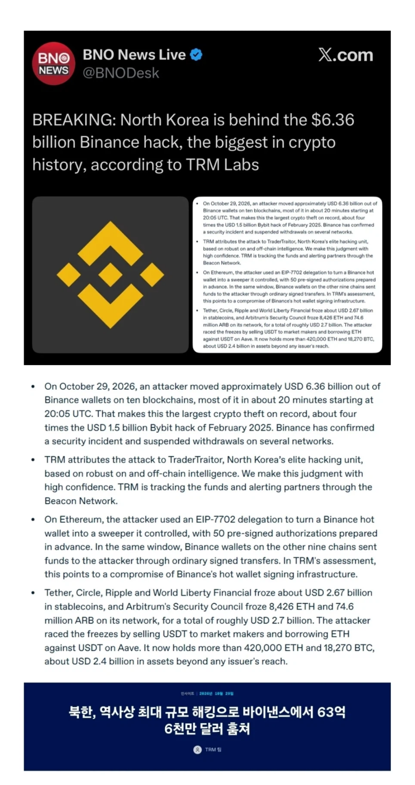
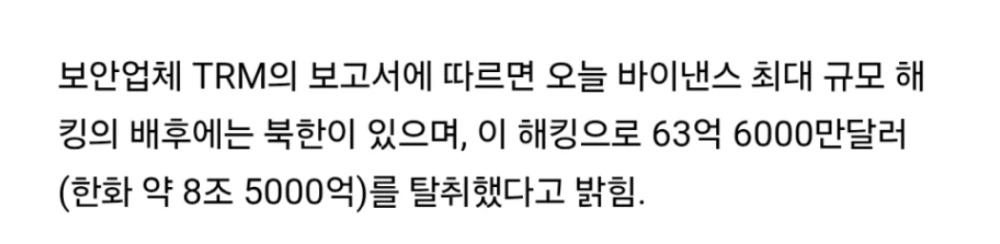
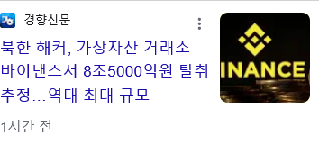
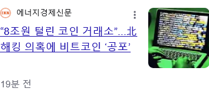

https://bbs.ruliweb.com/best/board/300143/read/77211052




https://bbs.ruliweb.com/best/board/300143/read/77211052




범죄 조직이 너무 거대하네
저건 누가 손해인거임? 코인 누가 들고 있었는지 모르니깐 배상도 힘든거 아닌가? 아닌가...들고 있는지 아나?...헷갈려...저거 거래소에서 배상해주나?
블록체인 기술은 참여자들간에 인증이 맞물리는 시스템이라 해킹해도 소용없다며
코인자체랑은 상관 없이 거래소가 들고있는 돈이 털린건가?
이 사건으로 개인커스터디 활성화되고 거래소 내 비트코인 물량 바닥나고 가격은 폭등할 차례인가!!!!!
가즈아